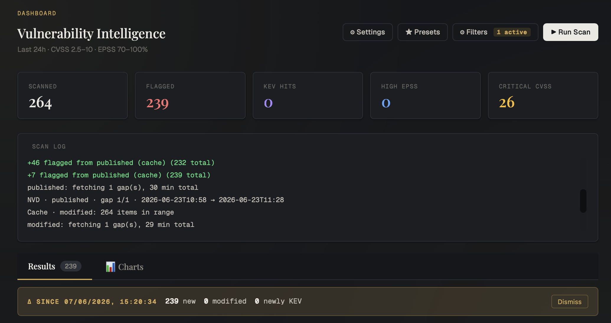
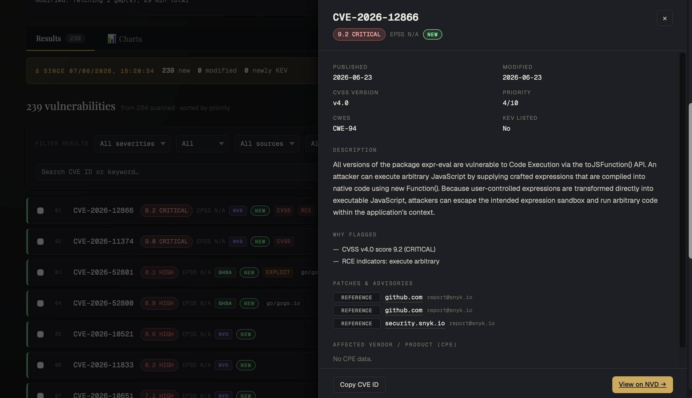
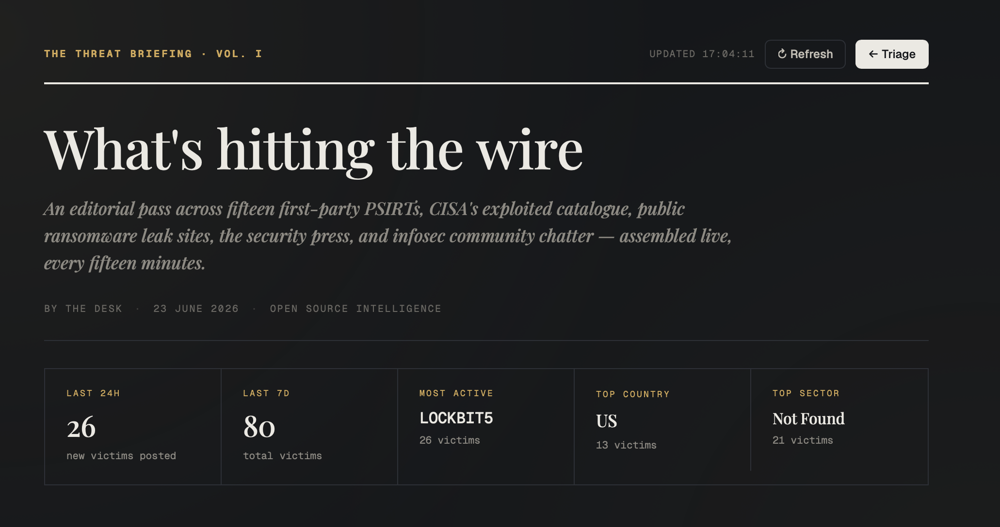
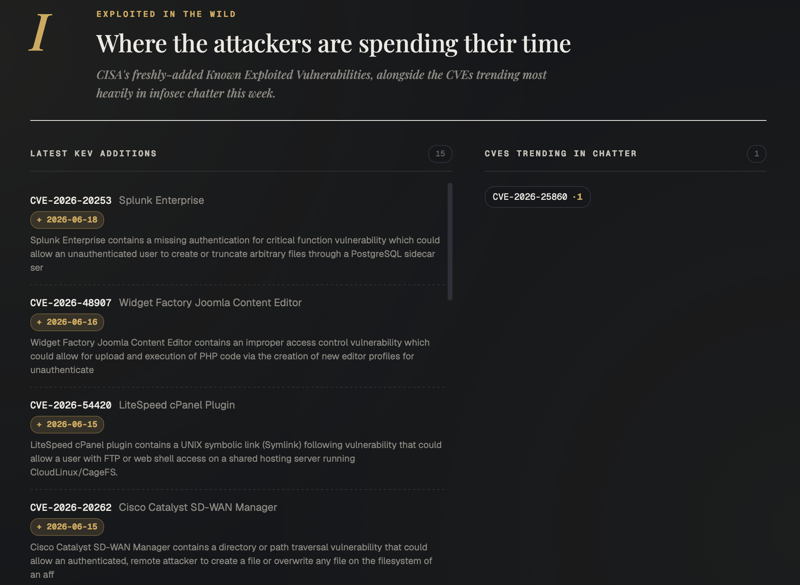
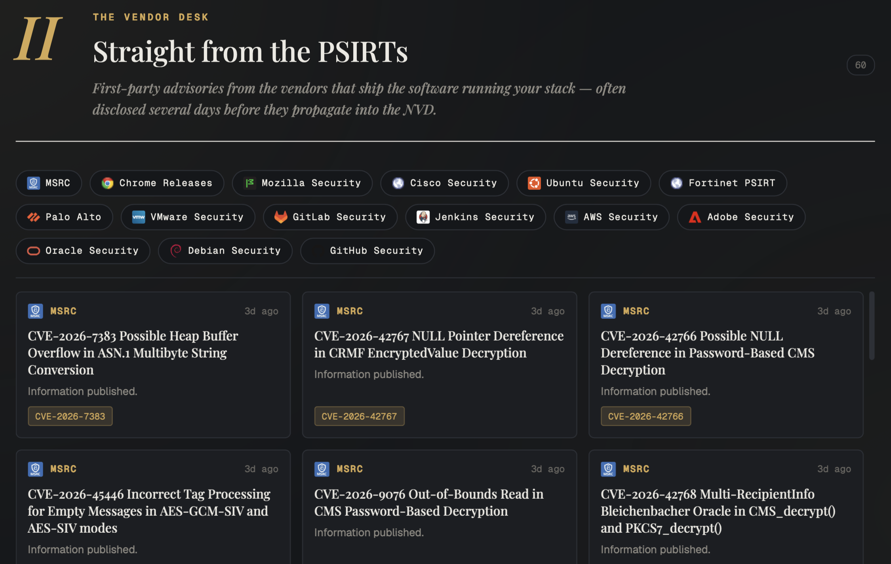
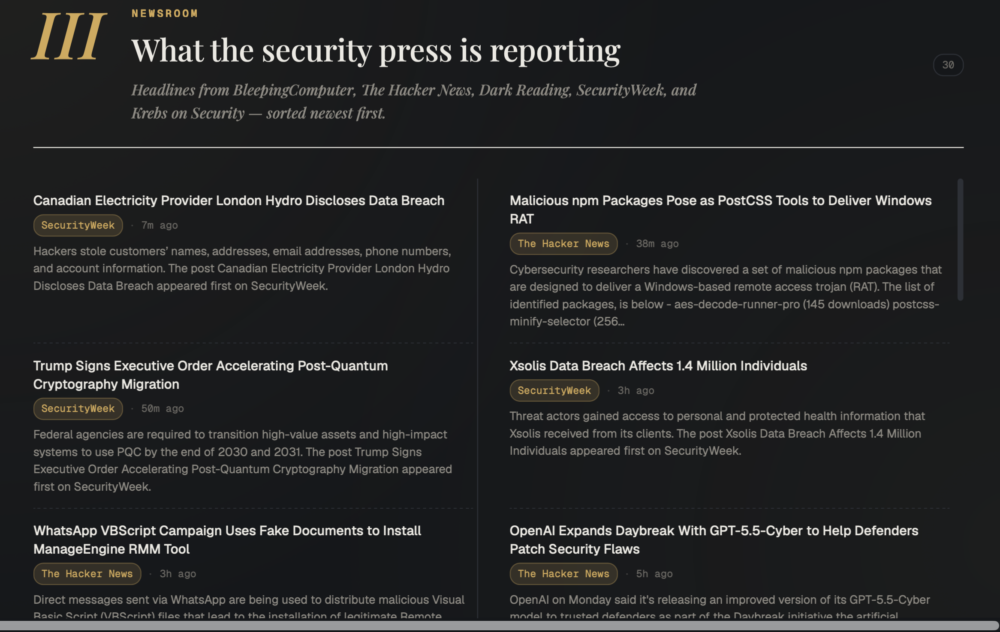
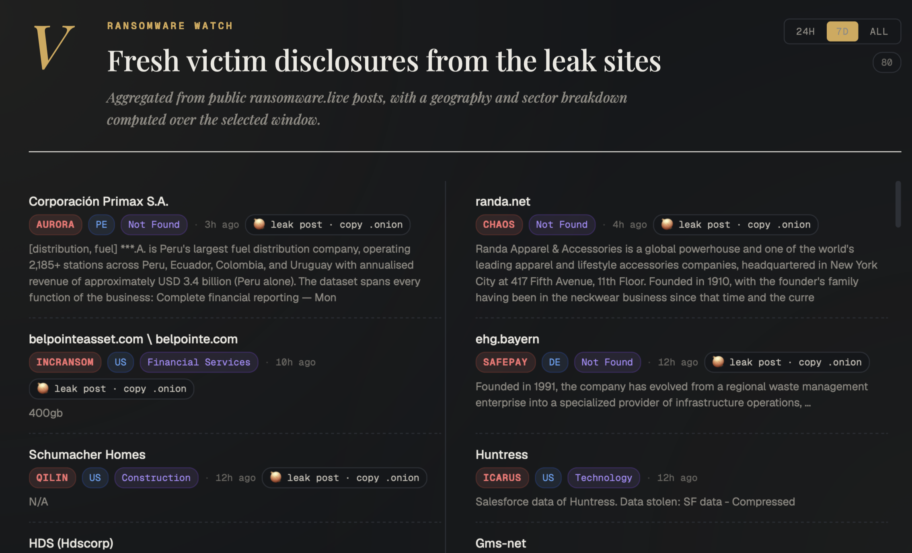

Vulnerability Triage System
A self-hosted platform for triaging and reporting on vulnerabilities pulled from the National Vulnerability Database — augmented with CISA KEV, EPSS exploit-probability scores, and GitHub Security Advisories.
Overview
Built for analysts who run vulnerability assessments across multiple scopes (clients, environments, projects), it pulls CVEs from NVD, scores them by exploitability and impact, and produces focused, evidence-rich reports — without the noise of generic CVE feeds.
A separate Threat Landscape view aggregates ransomware activity, vendor advisories, security news and community chatter, while an optional background poller re-runs triage on a schedule and alerts you the moment something high-priority lands.
Screenshots
click any image to enlarge







Key features
- Composite triage scoring — a priority score from four signals: CVSS base score, CISA KEV membership, EPSS probability, and RCE/exploit description heuristics.
- Flexible filtering — severity band, CVSS & EPSS range, KEV-only mode, CVE-ID range, and profile-defined product targets.
- Live SSE streaming — results populate the dashboard mid-scan as each NVD page is fetched and triaged.
- Gap-aware SQLite cache — overlapping scans only request the missing window; the trailing 30 minutes is always refreshed.
- GHSA augmentation — GitHub advisories are normalized into the NVD shape, deduped by CVE ID, and surfaced only where NVD missed them.
- Insights & charts — six KPI cards over six Chart.js visualisations, including a CVSS × EPSS risk matrix with KEV highlighted.
- Per-CVE triage state — Open / Investigating / Patched / False-positive, persisted locally across sessions.
- Report scoping via profiles — named scopes whose metadata is baked into the CSV export header.
- Threat Landscape — ransomware groups & victims, vendor PSIRT advisories, security-press RSS, Reddit chatter, recent KEV, and trending CVEs.
- Background poller — re-runs triage on a schedule and fires a native macOS notification when a new finding crosses your threshold.
- Hardened by default — stdlib-only OWASP-aligned controls: rate limiting, CSRF tokens, strict input validation, hardening headers, server-side secrets.